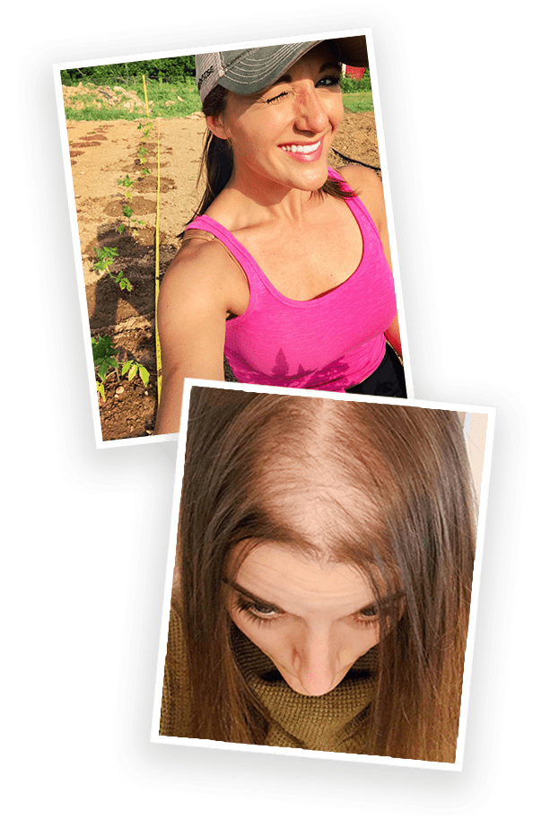
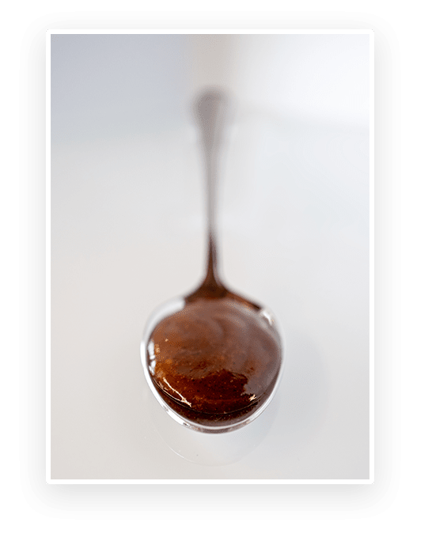

One Bite Of This Unique Cinnamon Roll Dessert Every Morning Can
STOP Women’s Hair Loss In Its Tracks…
And Help You Regain Your Youthful, Glowing, Beautiful Hair Effortlessly!
When Cristina stepped into the shower that day, she was hoping for a few
precious moments of peace and quiet...
The last thing she expected was to find herself on her knees crying, desperately grasping at the dead hair falling out of her head and slipping down
the drain - revealing an ever expanding bald spot on her scalp.
After all, Cristina had spent the last 4 months of her life on top of the world.
As a
brand new mom with a 4-month-old baby and a happy marriage, she was living
a version of the “perfect life” she had dreamed of for years.
Every time her new baby smiled, blissful joy shot through her like a spark from
Heaven.
But after weeks of all-nighters spent by the cradle singing lullabies,
Cristina desperately needed a few moments of peaceful silence.
She was EXHAUSTED.
As A Mom,
Maybe You Can Relate?
For The First Few Weeks Of Motherhood
It Was Easy To Hide How Tired She Was.
But after months of round-the-clock new mom responsibilities, Cristina’s
reflection clearly showed her hair’s youthful glow had faded…
and recently she had started shedding an abnormally large amount of hair when
she brushed in the morning.
But Cristina chalked it up to simply “being tired”.
So when she retreated into the shower that day she was looking forward to a few
precious minutes of alone time where she could breathe, relax, and
recover before going back into full “mommy mode”.
But instead of a blissful retreat, Cristina’s shower turned into a nightmare…
Stroking her fingers through her hair under the warm water, Cristina felt panic
start to rise up in her chest as strands of hair tangled around her fingers.
Like pulling on the string of a sweater,
the more Cristina ran her hands through her hair, the more hair would come out
and wrap around her hands.
Suddenly noticing she was splashing around in an inch of standing water, Cristina
looked down in horror to find GOBS of her once beautiful hair clogging the
drain.
With the bald spot on her head growing, Cristina fell to her knees grasping at
her fallen hair, sobbing as it slipped through her fingers and disappeared down the
drain.
A Peaceful Morning Shower Turned Into Every Woman’s Nightmare!
If you’re a woman who’s dealing with hair loss,, you
can probably relate to the feeling of shock the day you realize that you are
losing more hair than you’re growing back.
Maybe you’ve just given birth…
Maybe you’re going through menopause…
Or maybe you’re just dealing with an overload of stress
Regardless of the reason WHY your hair is falling out, you undoubtedly remember
the panic that steals your breath away when one morning your brush pulls out a
particularly large clump of hair…
You might know the feeling of self-pity that comes from looking in the
mirror
combing your hair every which way to cover your bald spot…
And you definitely know how quickly your confidence can crumble when your hair
starts falling out…
This is exactly what happened to Cristina.
Before that fateful day in the shower when she finally noticed she was losing A LOT of
her hair, Cristina’s life was filled with compliments.
She had always been told how beautiful her hair was.
Other women asked what her secret was to make her hair so shiny and grow so
effortlessly.
And every night her husband would run his hands through her hair before they went to
bed.

Cristina’s Hair Made Her Feel, Well…
Like A Woman.
So that’s why it was so devastating to begin suddenly losing hair in her
early-30s.
This is a picture of Cristina on her farm in Maryland a few weeks after her hair
suddenly started falling out.
While it looks innocent on the surface, what this picture hides is a
nightmarish story that affects over 50% of women at some point in their lives.
[ 1 ]
You see, under the hat in the picture above,
Cristina is hiding THIS…
And while losing your hair is a nightmare that no woman ever wants to go through…
What’s WORSE Than Losing Your Hair Is Feeling Like Your
Life Has Been Stolen From You.
With her confidence gone, Cristina started skipping social events to stay home
and hide her bald spot.
When she had to go to the grocery store, Cristina wore a hat and got in and out as
fast as she could.
And maybe worst of all, Cristina’s intimacy with her husband disappeared and
their relationship crumbled.
Cristina’s life had changed overnight thanks to her growing bald spot…
But the saddest part about Cristina’s story is that she is NOT ALONE.
Millions Of Women Suffer From
Premature
Hair Loss…
But Only A Few Learn The Simple Natural Secrets To
Recover And Grow Their Hair Back
When most people think of premature balding they think of a middle-aged man.
But no one talks about the MILLIONS of women who suddenly begin losing their hair
out of the blue for “no reason” they can think of.
One day you’re a brand new mom on top of the world…
Or perhaps a successful woman moving into your golden years of life…
Or even a proud grandmother, enjoying your retirement by spending time with your
grandchildren….
And then one morning you wake up to find little strands of hair clinging to
your pillow that fell out overnight.
After that, every shower you take ends with a clogged drain full of dead hair that
fell out of your scalp…
And eventually you’re spending every day tearfully scrutinizing your scalp in the
mirror… hoping, wishing,
PRAYING that more of your precious hair DOESN’T fall out.
If you’re like Cristina and other women who go through sudden and seemingly
unexplainable hair loss,you’ll try almost ANYTHING to get your hair to grow back.
But That’s When You Find Out Your Options Are Less
Than Ideal…
Hair implants and high end wigs are
exorbitantly expensive and ultimately don’t give you YOUR hair back.
Trendy serums and leave-in conditioners
don’t seem to do anything but make your hair feel softer.
And medicated options like Rogaine/Minoxidil
require you to use their product EVERY DAY for the rest of your life, because
the second you stop using it your hair dries up and falls out of your head
like a tree shedding its leaves in the Fall.
After trying what felt like EVERY treatment on the market with
no noticeable results to speak of…
What’s WORSE Than Losing Your Hair Is Feeling Like Your
Life Has Been Stolen From You.
And if you’re dealing with thinning or disappearing hair, chances are
you’ve felt like giving up before as well…
Maybe you even think that living with your bald spots is inevitable…
But if there’s one thing I NEED you to know before you leave this page
today, it’s this…
Don't Give Up Yet
Because even in your darkest moments when things seem hopeless,
there can be light found in the strangest of places.
This was exactly the case with Cristina.
Even though Cristina’s story was shaping up to have a very dark ending filled with
depression, loneliness, and social isolation…
That is NOT where her story ended.
How do I know?
Well, because that woman with the bald spot in the pictures above is ME.
My Name Is Cristina Marie
Like you now know, not many years ago I was hiding out on my farm here in Maryland...
As my beautiful hair slowly faded awaylike sand slipping through my fingers.
I felt hopeless…
Scared…
Depressed…
And at my darkest moments, I worried that I would lose my husband, my friends,
and be confined to my farm as the “weird bald lady” at the end of the street
for the rest of my life.
It’s certainly happened to other women before me, so it just seemed like I was
next in a long line of hair loss casualties.
But that’s when I decided to turn my attention away from what treatments I could get
and adopted a more holistic approach to healthy hair growth.
And that’s when I discovered something pretty incredible
that allowed me to go from looking like this…
To Me Looking Like This Today…
I Got These Results Naturally WITHOUT:
Hair Implants Or Sugery
Using Topical Serums
Any Medicated Options
(including Rogain)
Instead, I was able to work with my body to grow my hair back naturally and healthily
so it will stick with me for years to come
using my very own “cinnamon roll” dessert recipe.
CSo… How’d I Do It?
I’m about to tell you exactly how stop losing hair and instead
start growing thick, healthy, shiny, and beautiful hair again effortlessly.
And, even though it might sound a little crazy…
The answer has everything to do with a
delicious “cinnamon roll” dessert that I take one bite of every morning.
I know, I know…
What Does Eating A “Cinnamon Roll” Dessert Have To Do With
Growing My Hair Back?
Strangely Enough, EVERYTHING
But before eating a “cinnamon roll” dessert will make sense for hair growth to you,
you need to understand exactly how our bodies grow hair.
You see, hair is made out of a special substance called “keratin”. And in order to
make keratin, our bodies need a whole host of important natural nutrients like
biotin, selenium, and several different vitamins.
When we’re young, our bodies typically have no problem producing all these nutrients
to grow healthy hair.
But As We Age And Go Through Life Events Like:
Pregnancy
Menopause
Even HIGH STRESS from work or family affairs
Our bodies change how we use our nutrient reserves.
The reason is because women go through several inevitable hormonal shifts in life
that alter how our bodies use our nutrient levels.
For example,
when we get pregnant our body completely alters our hormone levels
to dedicate a SUPER amount of the nutrients we have into making a baby. And after we
give birth, our hormone levels crash back to normal quite quickly
which can leave our nutrient reserves low enough that our bodies literally
CAN’T grow new hair.
But pregnancy isn’t the only life event women go through that alters our hormone
levels.
When women go through menopause, a similar tidal wave shift in plummeting
hormone levels of estrogen occurs to stop our menstrual cycle.
And unsurprisingly, the sudden shift in hormones changes how our bodies utilize
our nutrient reserves.
This varies from woman to woman, but a very common symptom of menopause is a
sudden shedding of hair thanks to altered hormones and reductions in the amount of
nutrients our scalp needs to grow hair.
These massive hormonal shifts can even happen when a woman spends a lot of time
under high stress.
Stress can cause us to fall into “survival mode” where our bodies will shift hormonal
levels to direct nutrients away from non-essential bodily functions (like growing
hair) and prioritize only major body systems that keep us alive. The result?
You suddenly start losing hair.
These inevitable life events happen to most ALL women. And when we go through these
inevitable life events, our body will try to make keratin to grow hair,
only to find that the nutrients it NEEDS aren’t there in the right amounts.
When We Don’t Have Enough Nutrients In The Right Levels To Make Keratin And
Grow Hair…
Our hair starts thinning and falling out like what happened to me after giving
birth.
And no matter what treatments, serums, or surgery we get…
Our bodies simply CAN’T sustain natural, luscious, beautiful hair growth without
the nutrients we need to make keratin and grow hair!
Think about it like this…
You can’t PULL new and healthy hair out of your scalp when your body doesn’t have any
nutrients to actually make hair. There’s just no hair to give.
But…
You CAN give your body the right nutrients to PUSH hair out of your scalp naturally.
So the question is…
What Nutrients Do You Need To Grow Out Your Hair?
I went searching for answers to this EXACT question in the middle of my hair loss
crisis.
Every single “hair growth strategy” you can think of, I tried.
I went on extremely restrictive diets like Keto, Paleo, and even a raw diet.
I took:
Biotin supplements
Soluble keratin
Different B vitamins
Vitamin C
Vitamin C
Vitamin D
And even zinc
But even though I spent a tremendous amount of money on a whole smorgasbord
of supplements and altered my diets to the extreme…
I Saw Next To
ZERO Results!
My hair was still falling out and no naturopathic doctor, dermatologist, or Chinese
healer (I saw several) could tell me why!

And that’s when I decided to take matters into my own hands.
I spent months gathering little golden nuggets of information from my own research
online…
I began speaking to leading hair loss experts…
And even attended several beauty and wellness expos all over the nation where I
spoke with top researchers in the supplement industry...
Once I felt I learned everything I needed to know…
I started to develop a unique “cinnamon roll” dessert recipe that would boost hair
growth with a single bite each day.
Once I nailed the recipe down, I commissioned a small manufacturing company in
California with cutting-edge nutrient absorption technology (more on that later) to
create my very own hair growth “cinnamon roll” dessert…
Something that the women’s health and hair industry had NEVER seen before.
It was a big risk and a pretty large investment, but I was dedicated to finding a
solution.
After months of trial and error, we finally created the perfect “cinnamon roll” that
satisfied all of my requirements…
And This Is What It Looks Like:
And while it may not LOOK like a cinnamon roll – stick with me here…
It tastes the real thing… an ooey-gooey fresh-out-of-the-oven cinnamon roll!
What you’re looking at in that picture is a spoonful of a supercharged cinnamon
roll flavored supplement, specifically formulated for hair growth, scalp health,
and hormonal balance.
This new delicious cinnamon roll recipe contains a “Micelle Liposomal Formula”
that allows you to absorb ALL the nutrients you need to make new keratin and
REGROW your hair naturally.
But before I tell you what kind of results I got from this special cinnamon roll
supplement or what a “Micelle Liposomal Formula” is,
it’s super important for you to understand…
The Real Reason Most Supplements
NEVER Work…
And Why A Daily Bite Of My Unique Cinnamon Roll Has Been Able To Help Thousands Of
Women (including me) Grow Our Hair Back When
Nothing Else Worked
What I learned from taking a whole platter of “hair growth supplements” every day
for months on end is that supplements typically DON’T WORK.
But the reason why isn’t because taking supplements is bad or that you’re not
taking enough of them…
It’s because the raw nutrients in most hair growth supplements get destroyed
going through our stomach acid.
So by the time the precious nutrients get to our intestines where they can be
absorbed and used to push hair out through our scalps… it’s already too late. The
nutrients are unusable and our body flushes them out of our system and into the
toilet.
So what that means is that taking normal supplements for months and months on end
probably WON’T help you grow your hair back…
However, by using something called a “Micelle Liposomal Formula” (like I
included in my special cinnamon roll recipe),
it’s possible to transport the nutrients we need to grow hair THROUGH our stomachs
so they can be absorbed up to 800% better!
Taking one spoonful of this delicious cinnamon roll supplement every day for just a
few short months might be able to help you start growing NATURAL, BEAUTIFUL hair
again!
And The Reason I Know This Is Because
That’s Exactly What Happened For Me…
Amazing right?
Those results didn’t come from spending thousands of dollars on wigs or surgical
hair transplants…
They didn’t come from buying fancy hair concoctions jam-packed with questionable
chemicals…
And they DEFINITELY didn’t come from using Rogaine…
Instead, those results came from the nutrients I got from
one spoonful of this cinnamon roll goodness per day.
But I wasn’t the only person it worked for…
I got my family to try it, then my friends, the neighbors, and eventually women
(and some men) scattered all across the country were taking one spoonful of my
special cinnamon roll per day to get AMAZING hair growth results.
The Results Speak For Themselves
Before Creating Biotin Plus
1 Month After Biotin Plus
3 Month After Biotin Plus
Now today I’m proud to reveal my perfected hair growth recipe to you.
Introducing...
Complete Biotin Plus
The Complete “Recipe” To NATURAL And EFFORTLESS Hair Growth
Packaged In A Delicious Bite Of Cinnamon Roll Goodness
Complete Biotin Plus is a natural solution to STOP hair loss and regrow
luscious, flowing, beautiful, glossy, natural hair effortlessly!
It works to help you grow your hair just like baking a cake…
Just like you need all of the right ingredients in the right amounts to bake a
cake like flour, sugar, vanilla, and baking soda or the cake won’t come out right…
You NEED all the right “ingredients” to grow your hair!
And Complete Biotin Plus gives you all the right nutrients packaged together in the
right “recipe” that tastes like a delicious cinnamon roll AND helps you grow natural,
beautiful, youthful, luscious hair!
Here Are All The Ingredients Included Inside Biotin Plus
For Effortless
Natural Hair Growth…
Ingredient #1 = Biotin
If you’ve researched hair growth or even just “natural health” in general before,
chances are you’ve heard of Biotin.
Biotin is one of the most plentiful and foundational nutrients that our bodies
use.
Our skin, our joint cartilage, and - of course - our hair REQUIRES Biotin.
There is no shortage of Biotin supplements on the market, but during my hair loss
crisis I was shocked to learn that
most Biotin supplements are nearly USELESS for our bodies.
The reason why is because most biotin supplements aren’t packaged in anything to
protect them from the harsh environment of our digestive system.
So this means that, even if you take an excess of biotin each day, chances are it’s
just being flushed through you right down the toilet without ever being absorbed and
used to grow your hair.
And if you aren’t absorbing biotin, it’s likely your body doesn’t have an excess of
biotin to spare to push hair out of your scalp.
That’s Why I Had To Go A Step Further With The Creation Of Complete Biotin Plus And
Include A
New Technology
Called…
Micelle Liposomal Formula
But that’s not all…
Inside the liposome are even smaller little package delivery systems called
“micelles” that make nutrient absorption by our bodies even easier.
In fact, this Micelle Liposomal Formula can help INCREASE the absorption of
nutrients by up 800%!
[2],
[3],
[4]
And that means that
taking Complete Biotin Plus can give you roughly 8x MORE results
than taking regular (and much less delicious) supplements.
With Complete Biotin Plus, you’re actually absorbing nutrients instead of letting
them pass through your body – right into the toilet.
But just like you can’t bake a cake only using flour…
You can’t grow hair by ONLY taking biotin.
That’s why it’s called Complete Biotin PLUS as a hint for all the other vital
hair-growing nutrients in it.
Ingredient #2 = Vitamin D3
You can think of Vitamin D (aka the nutrient we make when we get enough sun) as
the regular for our bodies.
Without vitamin D, the cells that regulate hormone levels and dictate nutrient
shuttling for hair growth go all out of wack and eventually shut down.
You can think about it as a lack of vitamin D being sorta like a factory that fired
all its workers.
Your body still has the basic system in place capable of making keratin and growing
hair… you just don’t have any cells to push the process along and make it happen.
Yet despite how crucially important having vitamin D in your system for hormone
regulation (and therefore getting keratin growing nutrients to your scalp to grow
hair)...
Over 40% of American adults are deficient in this critical nutrient!
[5]
And with stats like that, it’s unsurprising that vitamin D deficiency is one of the
most common shared factors for people with receding hair.
This is why I’ve included a super dose of Vitamin D in Complete Biotin Plus.
It will help balance your hormone levels (even when going through live events like
pregnancy, menopause, or high stress) and allow your scalp to get high nutrient doses
so you can grow out your hair naturally and effortlessly!
Ingredient #3 = Black Cumin Seed Oil
Most people haven’t heard of black cumin seeds, but even if
they have they don’t know about this special ingredient’s long history of natural
health and healing.
Ancient peoples all the way up through modern doctors have been using the plant that
grows black cumin seeds - Nigella Sativa - for centuries to treat virtually every
ailment under the sun including:
Reducing inflammation
Improving immune system strength and durability
Boosting white blood cell counts
Brain health
Lowering cholesterol
Improve symptoms of asthma
And improving digestive function
Not all uses have been scientifically proven, but one thing with scientific research
to back it up is the link between the seeds of this special plant and hair growth.
A 2017 study found a 76% reduction in hair loss once black cumin seed oil was added to
the participant’s daily regimen! [6]
These incredible results are believed to be because of black cumin seeds’ natural
moisturizing properties that benefit skin and hair growth production.
Essentially, black cumin seed oil helps your skin lock in moisture while stimulating
cell growth (especially in the hair follicles on your scalp).
Plus, black cumin seed oil adds a depth and “breadiness” to Complete Biotin Plus that
makes it taste like a real cinnamon roll!
IIngredient #4 = Pumpkin Seed Oil
Aside from making Fall the most delicious and wonderful time of the year, pumpkins
have a strange trait that can help trigger natural hair growth.
See, our bodies have the ability to release hormonal signals that BLOCK hair
growth.
It’s unknown exactly why our bodies do this, but theorized to have something to do
with prioritizing nutrients to other areas of the body.
It’s unknown exactly why our bodies do this, but theorized to have something to do
with prioritizing nutrients to other areas of the body.
But pumpkin seed oil has a strange trait to override the hormonal signals that block
hair growth so your hair can keep growing WITHOUT being stopped by your own hormonal
blockers. [7]
Pumpkin seed oil combined with vitamin D ensures that your body does not fight back
against you when trying to regrow your hair.
Ingredient #5 = Selenium
Though you may have never heard of Selenium, this amazing nutrient is responsible
for healthy body regulation through supporting your thyroid (throat gland).
Selenium deficiency is linked to stress and increased risks of illness. Both
things that can negatively impact our ability to grow hair.
But ample levels of selenium correlate with a healthy thyroid. And a healthy thyroid
is shown to improve your mood, lower stress levels, and give our bodies the “all
clear” to grow hair.
Basically selenium allows you to more easily regulate levels of key hormones and take
care of base bodily functions. And when your body is healthy, it is much easier for
your scalp to grow hair effortlessly.
Ingredient #6 = Cinnamon
Yes, Complete Biotin Plus contains one of the yummiest spices of all – cinnamon.
Not only is cinnamon absolutely scrumptious…
It has a long track record of supporting hair health.
From studies showing it to be just as effective as common hair growth drugs…
To researchers finding that it can stave off dandruff and dryness!
[8]
Cinnamon is a hair health “super spice” with scientifically proven benefits AND
great taste.
Overall, Complete Biotin Plus Is The
ONLY Product
For Women That Helps Stop Female Pattern Hair Loss
While ALSO Helping Hair Grow Back Fuller, Healthier, And More Luscious
NATURALLY
With the 6 ingredients above combined with our Micelle Liposomal Formula in
Complete Biotin Plus…
You are getting a perfect formula to - not only STIMULATE hair growth - but also
REMOVE hormonal blockers our bodies release to prevent hair growth.
This gives you a 100% natural (and delicious) way to regrow YOUR natural,
youthful, beautiful hair!
There are NO harsh artificial chemicals…
No GMOs, gluten, sugar, soy, corn, yeast, dairy, wheat, and other common
allergens…
And NO need to swallow pills, take medication, or get expensive treatments to grow
your hair back.
Instead, simply take one bite of natural, healthy, delicious cinnamon roll
Complete Biotin Plus every day to enjoy amazing hair growth results.
Just Listen To What My Clients Are Saying!
So I have been using Complete Biotin Plus for about 3 weeks and it has been a great
supplement. My hair in front was very thin and sparse but
since I started using Complete Biotin Plus, I have new growth and the existing
growth is thicker and fuller.
I am really excited about how much new growth I have had and I am sure that the
longer I use Complete Biotin Plus, the better my hair growth becomes. I highly
recommend Complete Biotin Plus 100%!
– Ciana S, age 42
Verified Purchase
First off, I love the taste! Since I started with Complete Biotin Plus, I've been
sleeping so much better... Not sure if it's because of this product or not, but it
is the only thing I have done differently.
My hair strands feel thicker to me and I just had my hair trimmed and my stylist
said she sees new hair growth! :)
My energy levels seem better too. I don't get that afternoon slump. Thank you for
this product! It's comforting knowing a product is developed from someone who has
experienced the same hair loss issues.
– Sheri T, age 55
Verified Purchase
This is by far the best Biotin I’ve ever had. I’ve tried plenty of powders and
gummies but never noticed a difference in my hair, skin, or nails.
After just a short time of using this product so far, my hair looks shiner and
has less breakage, my skin has less breakouts, and my nails are not nearly as
brittle as they were before.
I have also noticed better energy levels too. I cannot wait to see my results after
30 days and beyond! Also, I keep my bottle refrigerated as suggested and it comes
out way thicker. I actually really like the taste right off the spoon. Sometimes I
will even have a spoonful in the evening to satisfy my “sweet tooth.” Great product
and I highly recommend it for everyone who wants beautiful, healthy hair.
– Ildiko M, age 35
Verified Purchase
All I know is that I started taking Complete Biotin Plus in May of 2022 and my hair
has really improved.
My hairdresser says it's like styling a different person's hair! I had a lot
of stress and my hair had thinned so much my hairdresser was trying to come up with
different hairstyles to hide my thinning areas… After trying what felt like
everything to help, Complete Biotin Plus is the only thing that worked for me. My
hair is fuller and is growing faster than ever. So thankful I found this product!
– Cara P, age 47
Verified Purchase
Love this product! I had been suffering from thinning hair for 6 months or so, and I
finally decided to try something new. Between using coconut oil directly on my scalp
and taking another supplement to help hair growth,
there is no comparison to Complete Biotin Plus! It’s SO much better! In fact, I
started to see a difference in just 1 month!
My hair was no longer falling out as much when I brushed it and I began to see baby
hairs growing in where my hair was thinning. I'm so glad to have found a product
that actually works. Even other people are noticing that my hair is growing back
which definitely gives me a confidence boost because I was beginning to be very self
conscious.
– Jamie T, age 39
Verified Purchase
Once I started to go through dreaded menopause, my doctor warned me that my hair
“may” grow slower and start thinning. Well, after 1 year, my hair was so thin that I
could see my scalp. It was debilitating. I considered getting hair implants, but it
was so expensive. Thankfully, I found Complete Biotin Plus.
I had no idea I could balance my hormones AND boost my hair growth with one
supplement.
After 3 months of taking Complete Biotin Plus daily, my hair is showing new growth
and my hair is no longer dry and brittle. This product is a lifesaver. I feel like
myself again.
– Cathy C, age 63
Verified Purchase
Cristina is my hero. As a mother of a 3 year old and an 8 month old, I know how
horrible postpartum hair loss can be. I am so grateful that I found her product a
few weeks ago. My hair shedding was out of control and I noticed that I was
developing a receding hairline. Now that I am taking Complete Biotin Plus daily,
I can see new tiny hairs growing along my hairline! It’s amazing! And my hair
isn’t shedding anymore.
This is a must-have for new moms!
– Jenna M, age 30
Verified Purchase
Imagine Your Life With
Effortlessly Beautiful, Full, Glowing, Luscious Hair
When you wake up in the morning there are NO little “hair monsters” clinging to
your pillow after falling out overnight.
When you take a shower there are
NO clumps of hair that fall out of your head and plug the drain.
When you brush your hair you don’t worry about accidentally pulling too much out
because your hair is strong, healthy, and easy to run a brush through.
When you go out in public,
you're not worried about your hair getting caught in the wind and revealing
your bald spot…
And when you look in the mirror, you’re greeted by a woman with a beaming smile
because she has a full head of thick, luscious, practically GLOWING hair. The best
part? That woman looking back at you in the mirror is YOU!
But there’s more!
Unlike the small fortune of supplements I used to take every morning (that didn’t
work), Complete Biotin Plus is made to be AFFORDABLE for any woman who cares about her
hair.
So…
“How Much Is Complete Biotin Plus?”
I created Complete Biotin Plus as a way to - not only to help you grow back your
hair naturally - but also to SAVE YOU MONEY.
According to a survey conducted by Daily Mail, the average woman spends
approximately $55,000 on her hair over her lifetime.
[9]
But if you’re a woman who’s dealing with female pattern hair loss, that number is
MUCH higher.
Some women spend multiple thousands of dollars per year on hair growth
treatments that may (or may not) give them lasting results.
Treatments can be multiple hundreds of dollars per visit and easily add up to
$1,000+
per year by themselves…
Medicated options like Rogaine are about
$350-$400/year (and your hair will fall out the
second you stop using the product)...
If you’re a woman that is considering getting a hair transplant to get your hair
back, you’re looking at up to
$20,000! And even then, a hair transplant
doesn't give your scalp the ingredients it needs to maintain YOUR hair on your head,
so chances are it will probably just fall out in the coming years…
And if you were going to take separate supplements for all the ingredients you get
inside of Complete Biotin Plus including:
Biotin
Vitamin D
Selenium
Black Cumin Seed Oil
Pumpkin Seed Oil
And cinnamon
You’re looking at a supplement bill of roughly
$1,700-$1,800/year!
And even then, chances are your body wouldn’t be able to actually USE the nutrients
you get in those supplements because conventional supplements don’t have a Micelle
Liposomal Formula like Complete Biotin Plus (which is protected by over 50 different
patents around the world)!
Since Complete Biotin Plus combines ALL the nutrients you need to grow hair,
produces amazing results (unlike most other supplements), and tastes GREAT…
Since Complete Biotin Plus combines ALL the nutrients you need to grow hair,
produces amazing results (unlike most other supplements), and tastes GREAT…
It’s fair to assume that it’s worth AT LEAST as much as the other supplements combined
at about $1,800.
Any woman I know would happily pay $1,800 to avoid going bald. (I certainly would have
when I started losing my hair.)
But when you buy Complete Biotin Plus today, you’re not going to pay anywhere near
$1,800.
It’s Much Less Than Even Half Of That…
Especially For A 3-Month Supply.
When you purchase your supply of Complete Biotin Plus today you won’t pay $1,800…
Not $900 (half of what most women pay for other products that don’t work)...
Not even $300!
And with your 3-month supply you can save even more…
Purchase Your 3-Month Supply Of Complete Biotin Plus Today And Save!
When you purchase Complete Biotin Plus today and your bottle(s) arrive at your
doorstep in just a few short days, you have
180 days (or 6 full months) to try out the product at NO RISK.
If you don’t like it…
If you don’t get results from using it every day…
Or if you have any other problem with it…
You can ask for a full refund with no questions asked and no awkward
conversations.
Just send us an email letting us know you’ll be sending your bottles back (yes, even
if they’ve been opened and used), and we will refund your ENTIRE order.
I’m so confident you’ll love Complete Biotin Plus that I am taking the full risk for
you and essentially letting you try it for FREE for the next 180 days.
ake Control Of Your Future With
Complete Biotin Plus
Today!
You don’t have to let thinning or disappearing hair ruin your life.
With Complete Biotin Plus, you can choose a different future with natural,
beautiful hair for years to come.
Just one tablespoon of heavenly cinnamon roll goodness per day could be
able to get you results like these this!
Looking For Help? Our customer care team is here to serve you! You can contact
us via phone or email Monday through Friday 9 a.m. – 5 p.m. EST.
Email Us: info@everbella.com
Or Call Us: 1-855-961-3837
Frequently Asked Questions
How will I know Complete Biotin Plus is working for me?
Most biotin products don’t actually get absorbed because they can’t pass through
your stomach without being damaged beyond repair.
But Complete Biotin Plus is different. It comes with our patented Liposomal
Micelle Formula to increase the absorption by up to 800%!
Also, it’s not just biotin…
When you take a spoonful of Complete Biotin PLUS you’re getting a whole host of
hair growth nutrients that give you everything you need to make keratin and grow
out your hair!
I’ve tried other biotin products that didn’t work. What makes Complete Biotin Plus
different?
The time it takes to see results varies from person to person, but some people
start seeing results in as soon as two weeks.
The first thing you’ll notice is your nails getting stronger.
Then you might notice shinier, healthier looking hair in the mirror.
You’ll also achieve more restful sleep and feel refreshed in the morning.
Next you may see small baby hairs (about a centimeter or perhaps upwards of an
inch) appearing on the scalp.
Your scalp will feel more comfortable and nourished – no itching or dryness.
Some people have even reported that their skin appears dewy and soft!
Does it work for men too?
Yes!
All the ingredients in Complete Biotin Plus are just as important for men as they
are for women. Especially when it comes to regrowing hair naturally.
What does it taste like?
Yes!
Imagine that ooey-gooey taste of a fresh-baked cinnamon roll that warms your mouth
and clings to your tongue making you go “mmmmmhhhh” every time you take a bite.
That’s what Complete Biotin Plus tastes like.
I prefer to take it by itself, but I’ve also had customers that stir it in their
coffee, mix with their yogurt, or drizzle it over ice cream.
How often do I take it?
Just one tablespoon a day is all it takes!
But it does taste good, so if you find yourself wanting to take two spoonfuls a
day then no worries. You can take as much Complete Biotin Plus as you want with no
risk of side effects or overdosing.
It’s a natural product that gives natural and effective long-term hair growth
results with no dangerous side effects.
How long does a bottle last?
One bottle contains 15 tablespoon-sized servings. I recommend you get a 3 month
supply to save the most money and give yourself the best opportunity to see long
term results.
Is there a guarantee?
Yes!
Try Complete Biotin Plus for 180 days. That’s a full 6 MONTHS! If you don’t like
it for any reason, we’ll give you a full refund no questions asked if you let us
know in the first 180 days.
Is this product GMO free?
Yes! It’s also sugar free, gluten free, AND free of soy, corn, yeast, dairy, and
wheat. It’s also tested for heavy metals and other harmful compounds.
Is this product Vegan?
Yes! It’s Vegan, Paleo, and Keto friendly!
Does complete Biotin Plus help if my hair is thinning?
Absolutely!
Complete Biotin Plus can help rejuvenate your hair from root to tip for that
“straight-out-of-the-salon” look.
What makes it taste like a cinnamon roll?
In addition to the 6 hair growth ingredients included in Complete Biotin Plus, we
also include natural flavors from Organic Non GMO almonds and sunflower oil, in
addition to maple extract, salted caramel extract, vanilla extract, and cinnamon.
The sweetness comes from a natural sugar-free alternative called glycerin.
Everything in Complete Biotin Plus is natural to boost your health without any
negative side effects.
Why is biotin from the store cheaper?
That might be true, but please remember cheaper isn’t always better! In cheaper,
conventional supplements, oftentimes very little thought goes into how the
compounds are actually absorbed by your body.
This means most of the nutrients are destroyed in the hostile gut environment,
with very little left over for you to use.
Our ingredients are encapsulated into tiny, nano-sized micelles which are further
enveloped into liposomes. These healthy fat cells shield the micelles from
premature breakdown in the gut, depositing the beneficial nutrients near the gut
lining where they can be fully absorbed!
I’ve tried other biotin products that didn’t work. What makes Complete Biotin Plus
different?
Complete Biotin Plus is formulated with micellized Biotin as well as Vitamin D,
Pumpkin Seed Oil, Cumin Seed Oil, and Selenium – all of which are shown to restore
thick healthy hair.
Micelle Liposomal technology ensures that your body absorbs these vital nutrients
to promote optimal hair growth while balancing your hormones. Most biotin products
on the market are JUST biotin and use conventional means (like capsules, pills,
gummies, powders) that are far less absorbable in your body.
Looking For Help? Our customer care team is here to serve you! You can contact
us via phone or email Monday through Friday 9 a.m. – 5 p.m. EST.
Email Us: info@everbella.com
Or Call Us: 1-855-961-3837
Research:
Micelle and liposomal delivery systems have been shown to be MUCH more effective at
getting nutrients into the bloodstream than standard supplements (up to 800% more
efficient). [17, 18,19 ]